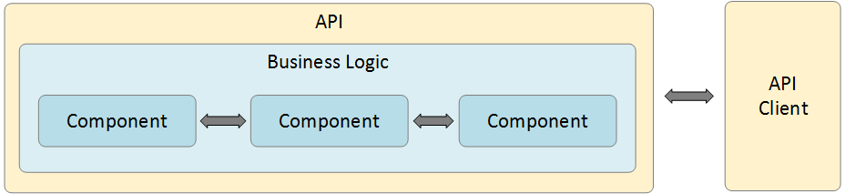

API 测试介绍
什么是 API
API 是应用程序编程接口（Application Programming Interface）的简称。从技术上讲，API 是 应用系统、操作系统、开发库等对一系列过程、函数的封装，开发人员可以使用 API 编程对其它的 应用系统、操作系统、开发库提供的功能进行调用。
如果以上对 API 的解释比较难以理解的话，我们举一个例子说明。假如你到了一个来到一个餐馆，不巧的时服务员这个时候不在。你可以到餐桌上拿到菜单，然后直接像厨师点菜，厨师就会按照你的要求去做。但是有时也会存在你点的菜没有原材料了。你就需要再次拿起菜单，再点一个其它菜。当有很多顾客都同时向厨师直接点菜时，厨师就要分出很大的精力去处理客户的订单，而不能专心做菜了。
另外我们这个世界有几百种语言。如果厨师不能听懂客户的语言该怎么办？这是最好有一个专门能听懂客户点菜的服务员。服务员就是厨师的 API，他（她）接收顾客的请求，然后传递给厨师，最后把顾客点的菜从厨师那里返回给顾客。服务员可以听懂顾客和厨师双方的语言。如果顾客点的菜后厨已经售罄，然后请顾客再选一个其它菜。这样可以节省顾客直接询问厨师的往返时间，顾客的体验也好多了。以上服务员服务顾客的这个过程也就是 API 的作用。
如上面的图所描述的那样，顾客向服务员提出订单，服务员的作用就时 API ，他（她）接收到订单转发给厨师，厨师这是就是后台的服务程序。服务程序处理完请求后把结果返回给顾客。像上面例子，厨师就是服务器应用，他从服务员（API）那里获得服务请求，处理请求（烹煮食物），然后把处理完成的结果（美味菜肴）返回给 API (服务员)。至于 调用 API 需要传入的不同参数，可以认为是顾客对菜肴不同口味的要求，例如多放辣椒、放自然、放咖喱、多加盐等。这些参数可以让服务器应用（厨师）采用不同的处理方式来处理请求。
API （应用程序接口）从客户终端设备中获得请求，然后把请请求发送给远程服务器，服务器处理完成后，API 从服务器获得处理结果，把处理结果再传回给客户终端。在现在的 IT 架构中，API 到处可见，被大量应用。API 根据使用要求，传入不同的参数后，从服务器端获得相应的处理结果。例如航班查询中，根据对航班的出发港、到达港、起飞时间等要求，可以查询出不同的航班、不同的票价等信息。作为客户端开发人员，通过 API 处理复杂且难以处理的请求，变得和容易，只要按照 API 的调用要求，正确的传入请求参数即可。这也是 API 的好处，它让 API 变得非常流行，随处可见。
API 测试
我们上面介绍了 API ，也知道了 API 对当前世界中分布式 IT 服务应用的重要性，因此 API 测试也随之变的重要。
API 测试可以提高服务应用的代码质量，提前发现服务应用的问题，并及时修复。相对于传统的 GUI 测试，API 测试可以底层的角度发现 GUI 测试不容易暴露的服务端问题，具有更短的问题反馈时间，更高效的解决问题的方式。
API 测试既可以使用手工测试，也可以使用自动化测试。在敏捷和 DevOps 更加流行的当下，持续测试已经成了被广泛认可的方法。由于 GUI 的自动化存在不少的缺点，例如测试脚本经常由于 GUI 变动而导致失败、测试执行效率低耗时长、测试人员等待时间长测试时节靠后需要开发提供 GUI 才能测试等。
在敏捷时代，测试应该前移，应该尽可能早地开始，应该进行更低层级的测试，例如 API 层、单元层。API 测试可以有开发人员执行，可以在 GUI 尚未开发的情况下进行。特别是在基于契约测试的情况下，API 甚至可以在服务端开发没有完成的情况下进行。

软件应用中的 API 在被正式部署前应该很好的测试，API 测试既是开发人员的工作，也是测试人员的工作。高质量的 API 对于应用程序很重要，它可以消除掉应用服务在被正式部署后可能出现的很多问题。基于此业界范围内也开发出了很多 API 测试工具、框架等。Postman 就是其中比较著名的一个。
测试人员在 API 测试中的角色和职责
作为 API 测试人员，应该对 API 有全面的知识体系，例如 Web 服务、REST、SOAP、微服务等。
API 测试需要的技能栈：
能够使用 WEB 调用方法 GET、POST、PUT、DELETE等
能够验证请求响应 （RESPONSE）、错误代码（ERROR CODE）等
JSON 格式、XML 格式的内容
能够使用鉴权方法，例如 OAuth、 OAuth2、BASIC Authorization等
能够做 WEB SERVICE 的性能、安全测试
能够读懂 API 说明文档
能够编写 API 测试案例和场景测试案例
能够编写 SQL 验证与 API 相关的数据库数据
能够熟练掌握 API 测试工具
SOAP UI、Postman、JMeter、RestAssured、Rest Sharp、Node modules等
API 测试与单元测试
很多测试人员把 API 测试和单元测试混在了一起，事实上它们是不同的，负责的范围也不一样。单元测试是基于类的测试或根类同一级别组件的测试。单元测试常常由开发人员负责，验证类或模块是否完成了它的设计功能。开发人员自测负责的类，发现缺陷后自行修改，直至达到设计要求。单元测试保证了么一个类或者模块的正确性，它们是软件质量的基石。

相对于单元测试白盒测试，API 测试应该算是黑盒测试，测试功能连接服务程序对外提供的接口进行测试，而不会对外暴露内部的实现逻辑。API 测试需要对应的服务运行，通过 API 接口与服务器应用交互。
API 测试主要是测试系统架构中的业务逻辑，由集成测试团队负责。测试人员通过调用指定版本的服务程序提供的接口进行测试。这样单元测试主要由开发人员负责，在负责角色上有所区别。
API 测试也对单元进行测试，与单元测试所不同的是，单元测试是把被测单元与系统其它部分隔离出来进行测试，API 测试是把被测单元作为系统相系联系的一部分进行测试。API 测试其实也是端到端的测试。当我们进行 API 测试时，跟 API 相关的模块都会测试到。然而进行单元测试时，仅仅对被测模块或类进行测试，被测试的模块或类是与系统的其他部分隔离开的。
API 测试关注那些点
当我们用API工具进行测试时，往往会遇到很多报错。这些报错不仅有API报错，也有软件应用报错，甚至是服务器错误。这使得软件测试人员关注的范围更广，相关的知识和技能也更重要。软件测试跟软件开发一样遵循一定的顺序和步骤。在软件开发阶段，测试人员可以编写测试案例和测试脚本。开发人员也可以使用测试人员编写的脚本来发现处于开发状态的软件应用的问题。在生产阶段，测试人员可以改善和升级测试案例，让测试案例兼容性更好，对软件的测试质量更有帮助。
本课程托管地址：
https://github.com/toolsqacn/postman-in-action